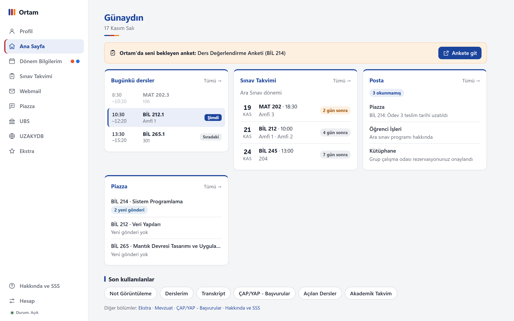
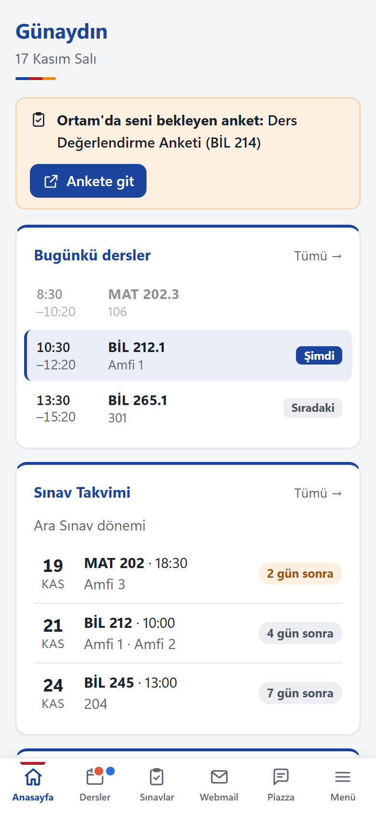
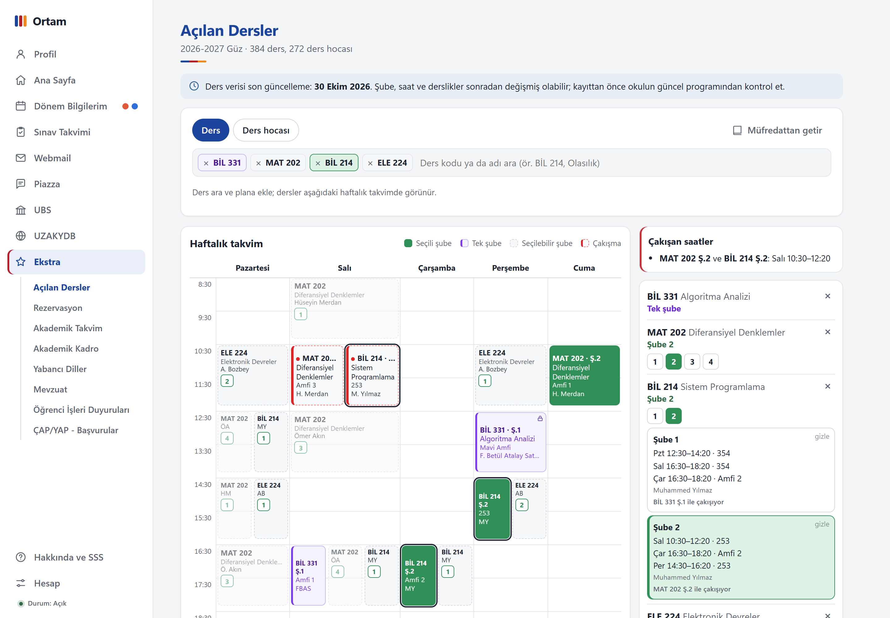

Şifren nerede, kod ne yapıyor?
Şifren yalnızca senin cihazında
Uygulamanın bir sunucusu yok. Okulun sitelerine doğrudan senin cihazından bağlanır; şifren yalnızca okulun kendi giriş sayfalarına gider. Kaydedersen cihazında şifreli durur (Windows DPAPI, Android Keystore).
Kodun tamamı açık
Her satır GitHub'da. Kendin okuyabilir ya da bir yapay zekâya inceletebilirsin: "Bu uygulama şifremi okulun siteleri dışında bir yere gönderiyor mu?"
Dosya tam olarak bu koddan
İndirdiğin dosyaları kimse elle yüklemez; GitHub kendi sunucusunda bu koddan derler ve imzalı bir kaynak kanıtı ekler. Dosya bir bayt bile değişse doğrulama başarısız olur.
Neler var?
- Bildirimler: Uzak'a yeni içerik eklenince haber verirUzak'ın kendi bildirimi yok; yeni dosya, ödev ya da duyuru eklenince, Piazza'ya yeni gönderi gelince bildirim gelir. Basınca içerik açılır. Sınavdan bir gün önce ve kayıt, ekle-sil gibi tarihler yaklaşınca da hatırlatır.
- Bütün siteler bir arada, tek girişleE-posta ve şifreni bir kez girersin; altı site aynı menüde, her biri tek tıkla. Bir dersin Ortam, Uzak ve Piazza içeriği tek sayfada.
- Açılan Dersler ve haftalık planDersi ya da hocayı ara, plana ekle; şubeler haftalık takvimde, çakışmalar işaretli. Çakışmayan en iyi beş programı kendisi bulur.
- Sade ve düzenliGereksiz menüler ve kalabalık ayıklandı. Sınav takvimi tek satır tek sınav; Webmail'de gereksiz otomatik e-postalar kendiliğinden temizlenir. Açık ve koyu tema, telefonda da düzgün.
Ekran görüntüleri



Görüntülerdeki öğrenci ve veriler uydurmadır.
Uyarı çıkarsa
Windows: "bilgisayarınızı korudu"
Ek bilgi → Yine de çalıştır. Dosya imzasız: Windows'un tanıdığı kod imzalama sertifikası yıllık ücretli. Dosyanın bu koddan çıktığını kaynak kanıtıyla doğrulayabilirsin.
Android: bilinmeyen kaynak
Tarayıcına bu dosya için izin ver. Play Protect uyarırsa "Yine de yükle"yi seç; çıkmazsa Play Store → Play Protect → Ayarlar'dan taramayı kurulum süresince kapat.
Kendin doğrula
GitHub CLI ile, dosyanın indiği klasörde:
gh attestation verify OrtamSade-kurulum.exe --repo Soft-Coder-183/ortam-sade
Neden böyle?
Neden web sitesi değil? Web sitesi olsaydı şifren o sitenin sunucusundan geçerdi ve orada hangi kodun çalıştığını göremezdin. Uygulama senin cihazında çalışır; çalışan kod tam olarak açık olan koddur.
Neden Play Store değil? Mağazadaki bir uygulamanın hangi koddan üretildiğini kullanıcı denetleyemez. Burada her dosyanın açık koddan üretildiği herkesçe doğrulanabilir.
Neden üç dosya? Kurulum dosyası komut satırı gerektirmesin diye; zip, bilgisayarına bir şey kurmak istemeyenler için; APK, bildirimler en çok telefonda işe yaradığı için.
Okulun sunucularını yorar mı? Yalnızca açtığın ekranın sayfası istenir. Bildirim kontrolleri seyrektir (Uzak saatte bir). Uygulama okula kendini adıyla tanıtır; site hata verirse istekleri kendiliğinden yavaşlatır.